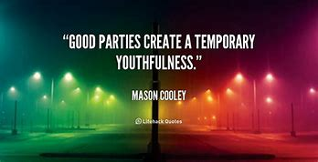

KYP A Global Platform For The Youth
Rrelief Of The Youth

The youth are one of the most non-reliable people only because they are always lying for their survival.
Your friends must co-ordinate with your hobbies and life time activities to keep thme on your safe side!
A youth relies on their mode of living not on the mode you expect them to be relying on! Kigenyi Abdul Rahman says "In the future most of the youth may fnid trouble as they struggle to live a new life from that they know grew up in, many may be fossed to join bad peer groups!"
The youth together must enroll in co-curricular activities to gain relief from all the bad situations that they may encounter!
Staying with positive mindset at all times is another key factor to use inorder to fight the bad thoughts thrilling in your head!
No youth stage is meant to be eternal or infinte, as it is witnessed no man has ever stayed in youth for more than 30years!
Back To Top